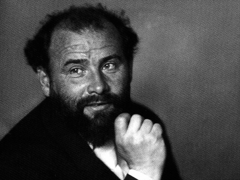
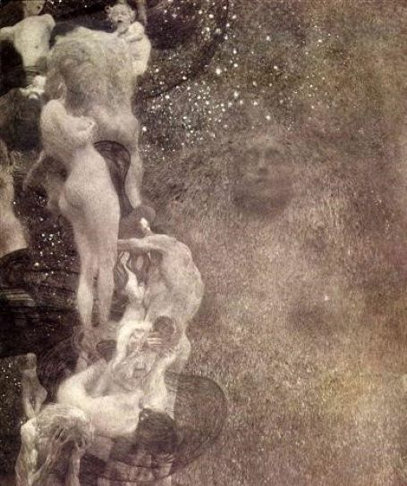
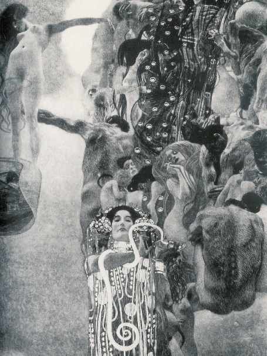
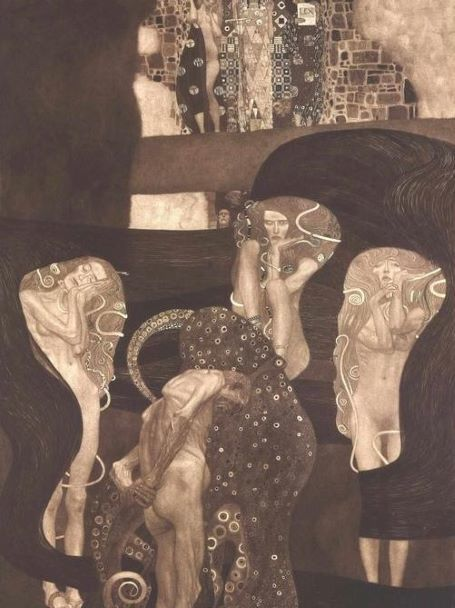
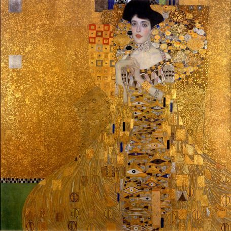
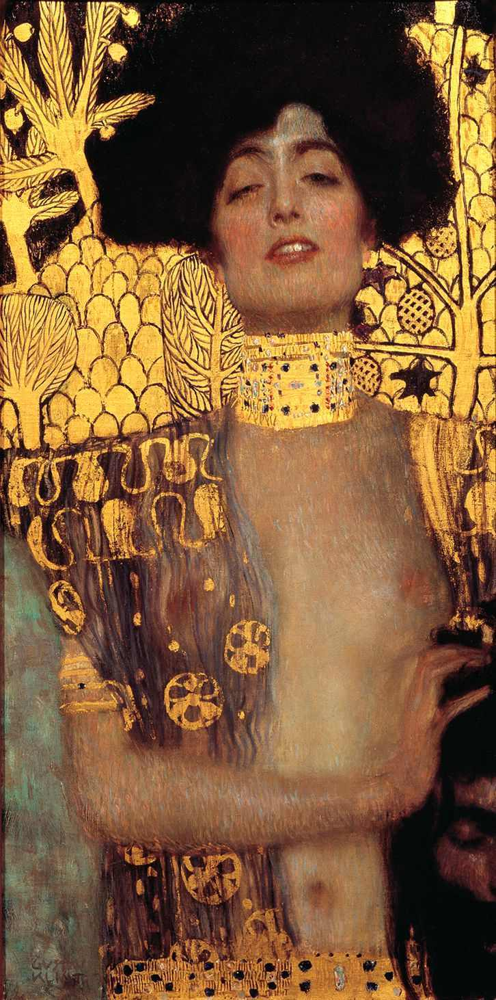
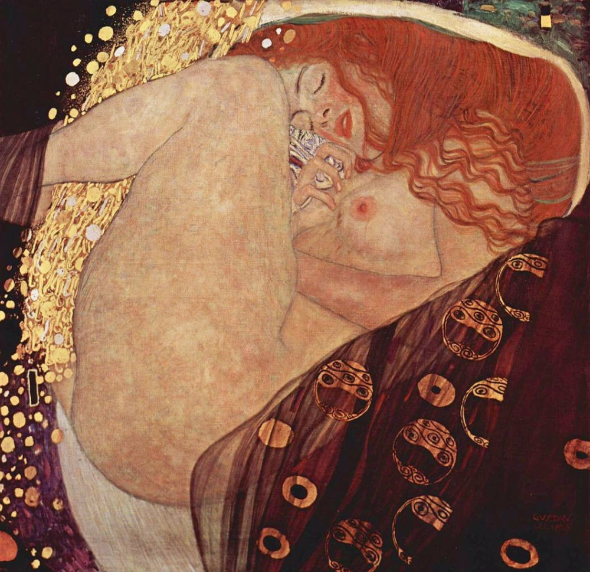
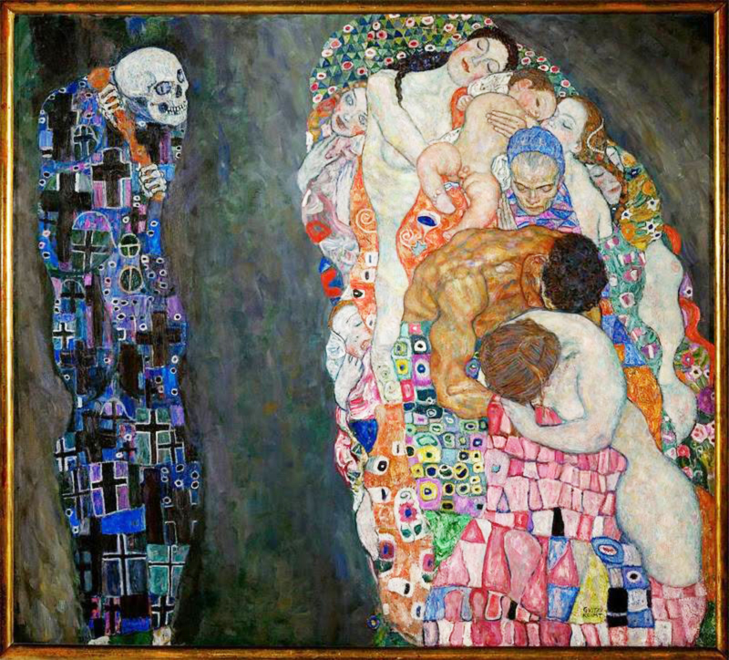

Um pouco sobre ele:
O artista: Gustav Klimt (1862-1918) foi um pintor simbolista austríaco, líder do “Movimento da Secessão de Viena” – grupo de artistas que se desligou do academicismo da pintura e aderiu ao Simbolismo. O estilo extravagante e carregado de simbolismo, o emprego ousado e inovador das cores e as assimetrias da composição caracterizam a obra de Gustav Klimt, o pintor mais importante do Modernismo austríaco. Gustav Klimt (1862-1918) nasceu na pequena localidade de Baumgarten, ao sul de Viena, na Áustria Imperial, que em 1867 foi substituída pelo Império Austro-Húngaro, no dia 14 de julho de 1872. Filho do gravador Ernest Klimt e de Anna Finster foi o segundo dos sete filhos do casal. Com 14 anos ingressou na Escola de Artes Decorativas de Viena, juntamente com seu irmão Ernest.
Inicio da Carreira
Gustav Klimt e seu irmão Ernest, estudavam desenho ornamental na Escola de Artes de Viena quando começaram a desenhar e vender retratos a partir de fotografias. Em 1879, Gustav, seu irmão e o amigo Franz Matsch passaram a auxiliar seu professor na pintura dos murais do átrio do Museu de História da Arte de Viena. Em 1880 os artistas começaram a receber encomendas e realizaram diversos trabalhos, entre eles, quatro alegorias para o teto do Palácio Sturany em Viena, o teto do prédio da terma de Karlsbad na Tchecoslováquia e a decoração da Villa Hermès a partir de desenhos do pintor Hans Makat. Três anos depois, Gustav Klimt abriu um estúdio independente especializado na execução de “pintura de murais”, com um estilo clássico, típico da pintura acadêmica do final do século XIX.
Em 1887, Klimt foi contratado pela Câmara Municipal de Viena para pintar o interior do antigo Teatro Imperial. No final dos trabalhos, o artista foi premiado com a “Cruz do Mérito de Ouro” pela pintura nas escadarias do teatro. Em seguida, Gustav Klimt recebeu a tarefa de pintar três grandes painéis para o teto do auditório da Universidade de Viena representando as figuras da “Filosofia, Medicina e Jurisprudência”. Em 1897, junto com um grupo de jovens pintores progressistas, desiludido com as restrições da Künstlerhaus, a sociedade da qual todos os artistas vienenses se sentiam obrigados a pertencer, Klimt resolveu fundar a “Secessão de Viena”, tornando-se seu presidente. O quadro de Klimt, Pallas Atena (1898), representando a deusa grega da sabedoria, foi um dos símbolos do movimento:

Em 1899, Klimt deu início ao painel “Filosofia”. Ao vê-lo, os membros da universidade reagiram horrorizados com as figuras nuas e a cabeça sonolenta em forma de lua que Klimt escolheu para retratar a filosofia.

Em poucos dias, diversos membros da universidade protestaram publicamente e enviaram um abaixo assinado ao Ministério da Educação para cancelar a encomenda. Um novo escândalo aconteceu quando o painel “Medicina” foi revelado. A Medicina mostrava a figura de Hygeia, a filha mitológica do deus da medicina, que estava localizada na parte inferior da tela e era identificada com uma cobra.

O tema que deveria unificar as três pinturas era “o triunfo da luz sobre as trevas”, mas os painéis não transmitiam esse tema com alguma clareza. Embora o Ministério da Educação tenha ficado do lado de Klimt, quando a “Jurisprudência” foi apresentada causou mais polêmica. A obra apresentava uma criatura em forma de polvo que abraçava corpos nus femininos em poses consideradas obscenas.

Depois de um dramático impasse entre Klimt e o Ministério da Educação, no qual o artista teria apontado uma arma para os homens que tentavam removê-las, o Ministério recuou e as pinturas permaneceram onde estavam. Em 1945, durante a Segunda Guerra Mundial, as obras foram tragicamente destruídas pelas forças nazistas e tudo o que restou delas foram fotos em preto e branco. A partir do ocorrido, Klimt não mais se envolvera com encomendas públicas, passando a se concentrar em paisagens e retratos, incluindo os brilhantes retratos da sociedade que consolidaram sua fama.
Fase Dourada
Os trabalhos mais famosos de Gustav Klimt pertencem a “fase dourada”, em que utiliza folhas de ouro e retrata principalmente mulheres adornadas por pequenos objetos e formas geométricas como no “Retrato de Adele Bloch-Bauer I” (1907). Os trabalhos com folhas de ouro mostram a influência da arte bizantina e dos mosaicos de Veneza e Ravenna, na Itália, destino de viagens do artista durante um tempo de sua carreira.

Pintava com extrema minúcia levando suas modelos a longuíssimas seções. Foi apaixonado por Emílie Flöge, com quem teve um longo caso de amor e foi sua companheira durante anos. Outra pintura da fase dourada é “O Beijo” (1907-1908), sua obra-prima.
")
Em 1911, Klimt recebeu o prêmio da Exposição Internacional de Roma. Com seu estilo rebelde de vestir, na maioria das vezes envolto em uma túnica escura, Gustav Klimt tornou-se uma figura exótica. Por muitos anos tentou, sem sucesso, ser admitido na Academia de Arte de Viena. Só em 1917, Klimt recebeu o devido reconhecimento, ao ser eleito membro honorário da Academia. No entanto, no ano seguinte sofreu um ataque de apoplexia. Gustav Klimt faleceu em Viena, Áustria, no dia 6 de fevereiro de 1918.
Outras obras do autor:


Curiosidades
Emilie Flöge foi sua amante durante anos e supostamente seria a figura retratada na obra “O Beijo”.
Klimt usou ouro de verdade para a produção de algumas obras do período dourado.
Alguns estudiosos do artista afirmam que Klimt teve 14 filhos.
Grande parte de sua obra está reunida no Museu Belvedere em Viena, Áustria. O local recebe cerca de 2 mil visitantes por ano.